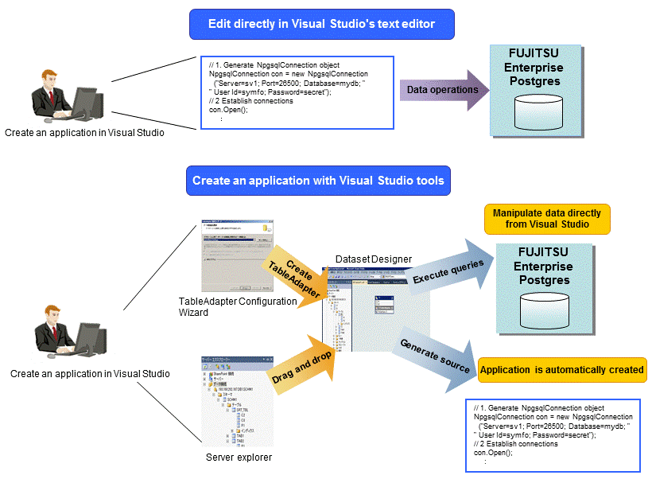

FUJITSU Enterprise Postgres provides .NET Data Provider, which is an interface for ADO.NET of .NET Framework. This enables you to select FUJITSU Enterprise Postgres as the connection destination database of ADO.NET and use the intuitive and efficient application development features of Visual Studio.

The following provides an overview of application development integrated with Visual Studio.
By using a component specified in Visual Studio, applications to access database resources can be created manually.
By using basic drag-and-drop operations in the tools provided in Visual Studio, programs to access database resources can be generated automatically.
